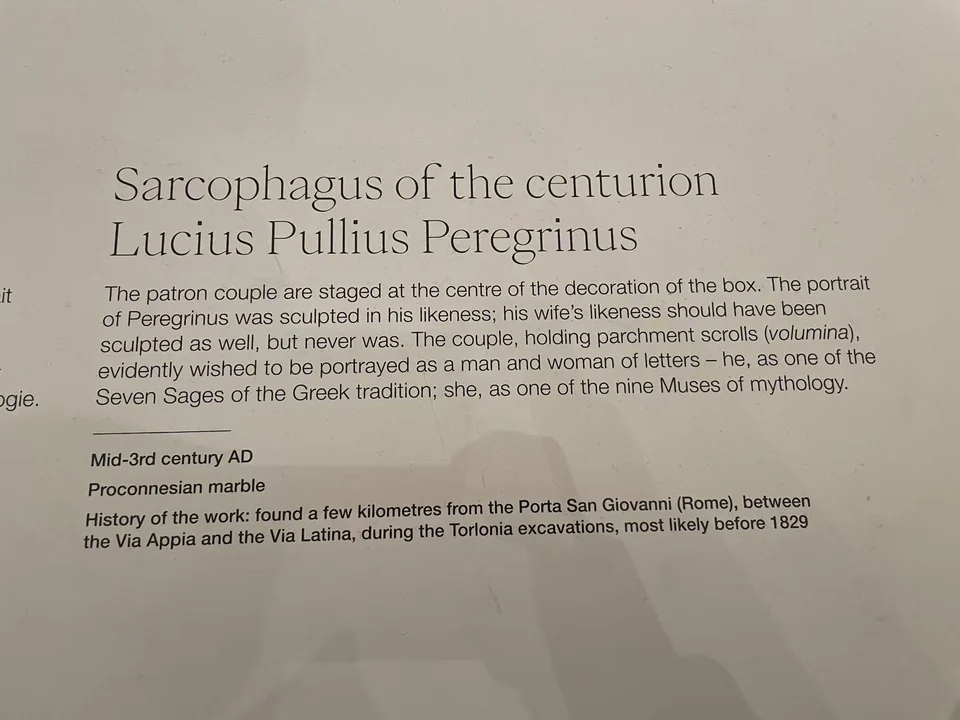

ROMAN SARCOPHAGI / R01
百夫长卢基乌斯·普利乌斯·佩雷格里努斯石棺
军人的纪念形象，也可以是一位展卷而坐的读书人。

- 年代
- 240–250年
- 材料
- 白色及普罗孔尼索斯大理石
- 收藏
- Fondazione Torlonia／托洛尼亚收藏
- 观看地点
- 卢浮宫 · 巴黎
- 馆藏号
- MT 424
- 发现地记录
- 拉丁大道附近；收藏方认为可能在昆蒂利别墅一带
卷轴旁的夫妻
正面中央的男子坐着展开卷轴，站立的妻子朝向他。周围人物或坐或立，披衣垂下长褶，头发与胡须的深凿留出暗影。托洛尼亚目录把丈夫放进希腊贤者的行列，把妻子解释为缪斯；军职之外，文化修养也成为纪念他的方式。 [1]
尚未刻出的肖像
丈夫的面貌已经刻出，妻子的脸却仍留在尚未完成肖像的阶段。这个差别比一排人物的相似衣着更值得停留：预先安排的神话形象，与后来需要加入的个人面容，在同一件作品上相遇。收藏方将石棺定于240—250年，并提醒棺盖可能原属另一口棺。 [1]
现场展签 · 1张
